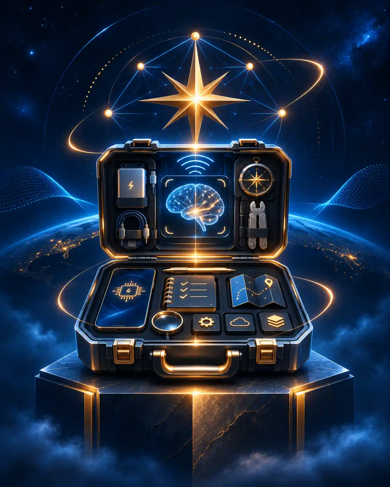

05 / GUIAS ÚTEIS
Manual de sobrevivência
Guias diretos para resolver problemas, escolher ferramentas e lidar melhor com IA e tecnologia no dia a dia.
Voltar ao mapa do blog
ARQUIVO / 05
Conteúdos desta frequência
Arquivo em organização
← Explorar as oito categorias
A estrutura desta categoria já está pronta. Os artigos serão adicionados aqui à medida que o conteúdo for migrado e organizado para a nova versão estática do site.